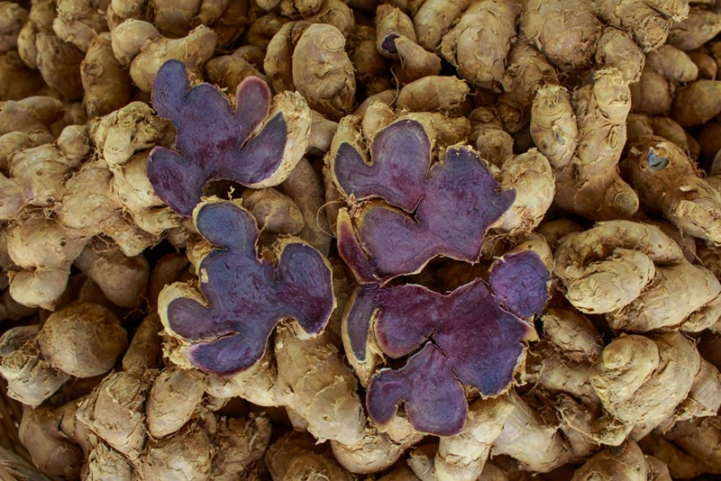

กระชายดำ
ไม้ล้มลุก มีลำต้นใต้ดินเรียกว่าเหง้า มีรากติดเป็นกระจุก เป็นที่สะสมอาหาร อวบน้ำ รูปทรงกระบอกปลายเรียวแหลม ผิวสีน้ำตาลอ่อน เนื้อสีเหลือง มีกลิ่นหอมเฉพาะ ใบเดี่ยว ออกเรียงสลับ รูปรียาว กว้าง 4.5 - 10 ซม. ยาว 15 - 30 ซม. ปลายใบแหลม โคนใบสอบ ขอบใบเรียบ แผ่นใบเรียบ ก้านใบยาว 7 - 25 ซม. กาบใบสีชมพู
ดอก ออกเป็นช่อ ออกแทรกระหว่างกาบใบ ช่อดอกยาวประมาณ 5 ซม. มีใบประดับสีม่วงแดงเรียงทแยงกัน กลีบเลี้ยงเชื่อมติดกันเป็นหลอด ปลายแยกเป็น 3 แฉก กลีบดอกเชื่อมติดกันเป็นหลอด ปลายแยกเป็น 3 แฉก ดอกที่ปลายช่อจะบานสวย กลีบดอกสีขาว หรือขาวอมชมพู ดอกบานทีละดอก มีลักษณะเป็นถุงแยกเป็น 2 กลีบ เกสรตัวผู้หมันด้านข้าง 2 อัน รูปรี สีขาวอมชมพู เกสรเพศผู้หมันที่มีลักษณะคล้ายกลีบปากขนาดใหญ่ สีชมพู
ผล รูปรี เมื่อแก่แตกออกเป็น 3 ซีก
กระชายดำสามารถขยายพันธุ์โดยใช้แง่งหรือเหง้าซึ่งเป็นส่วนของลำต้นใต้ดิน โดยทั่ว ๆ ไปจะใช้ส่วนของเหง้าเป็นท่อนพันธุ์ในการปลูก กระชายดำชอบดินร่วนซุย ไม่ชอบน้ำขังหรือดินที่มีการระบายน้ำไม่ดีเนื่องจากจะเน่าเสียโดยเฉพาะดินที่มีสภาพเป็นกรด เมื่อมีฝนชุกหรือความชื้นในดินสูง จะทำให้เกิดโรคเหง้าเน่า สามารถปลูกกลางแจ้งจนถึงมีแสงแดดพอควร ส่วนต้นเหนือดินมักจะยุบหรือแห้งเมื่อเข้าฤดูแล้ง ส่วนใหญ่จะเก็บเหง้าแก่เมื่ออายุ 10-11 เดือนหลังปลูก สีของกระชายดำถึงจะเข้มเต็มที่
การปลูกกระชายดำจะเริ่มเตรียมดินในช่วงต้นเดือนมีนาคม และจะปลูกต้นเมษายนของทุก ๆ ปี สำหรับการปลูกในแปลงใหญ่ และกลางแจ้ง ส่วนเหง้าที่นำมาปลูกนั้นผู้ควรทำการแบ่งเหง้าให้เป็นหัวเล็ก ๆ มีตาที่จะปลูก 2-3 ตาเพื่อการงอกที่มีคุณภาพ ทั้งนี้เมื่อเริ่มมีฝน หรือพายุฤดูร้อนก็สามารถทำการปลูกได้
การใส่ปุ๋ย ควรใช้ปุ๋ยคอกมูลไก่ผสมแกลบรองพื้น หรือใช้ปุ๋ยชีวภาพฉีดพ่นพร้อมกับการกำจัดวัชพืชและพรวนดินเมื่อมีใบ 2-3ใบ และให้อีกครั้งเมื่อกระชายดำเริ่มออกดอก ไม่ควรใช้ปุ๋ยเคมีกับกระชายดำ เพราะจะทำให้เกิดสารตกค้างในกระชายดำและจะทำให้หน่อกระชายดำที่เกิดใหม่ยาวและสีหัวไม่ดำ คุณภาพเปลี่ยนไป การให้น้ำควรให้ตามความเหมาะสม ให้รดน้ำพอชุ่มแต่ไม่แฉะ คอยระวังอย่าให้น้ำขัง
ใบเหง้า รักษามดลูกอักเสบ ช่วยมดลูกเข้าอู่หลังคลอด รักษาอาการประจำเดือนมาไม่ปกติ ปวดท้องระหว่างมีประจำเดือน ขับน้ำคาวปลา แก้ธาตุพิการอาหารไม่ย่อย แก้ริดสีดวงทวาร
ราก แก้ท้องอืดท้องเฟ้อ
กระชายดำที่แก่จัดจะมีอายุประมาณ 11-12 เดือน หัวจะต้องสมบูรณ์ อวบใหญ่ปราศจากเชื้อโรค เก็บไว้ในที่แห้งและเย็นนาน ประมาณ 1-3 เดือน